🌞 Zona Fótica
La superficie del océano es cálida, iluminada y rica en vida. Aquí encontramos algas, peces pequeños y mamíferos marinos como los delfines.

El largo de su caparazón va de los 76 a los 144 cm, con un peso promedio de 115.9 kg, en un rango de 71.7 a 180 kg
Son carnívoras, se alimenta principalmente de moluscos.Aunque pueden comer medusas, también pueden alimentarse en la superficie de macroplanton.
Es una especie ovipara, las hembras pueden poner hasta 110 huevos por vez, y pueden desovar hasta siete veces en una temporada; las tortugas regresan a playas de anidación donde entierran a los huevos en la arena gruesa por encima de la zona intermareal.
Aunque no son agresivas por naturaleza puede ser peligrosa para los humanos, ya que estas pueden transmitir enfermedades como la salmonelosis a través de su piel o contacto con su hábitat.
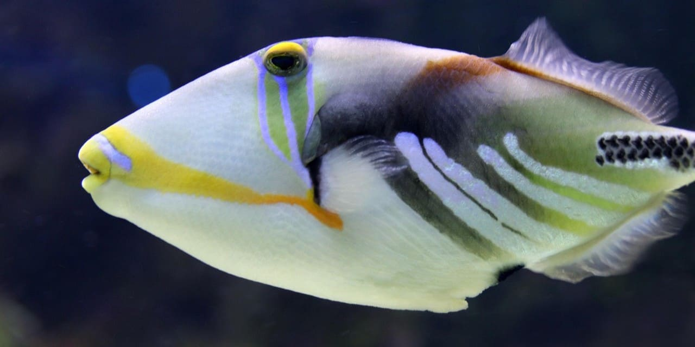
Varían en tamaño, puede ir desde 20 cm hasta 90 cm.
Se alimenta de invertebrados zooplancton o algas y suelen cavar en las profundidades en busca de alimento.
Se da principalmente a través de la fecundación externa, donde el macho y la hembra liberan sus gametos en el agua para que se produzca la fertilización. Los machos cavan nidos en la arena donde la hembra pone los huevos, y el macho los protege hasta que eclosionan.
Puede ser peligrosos, especialmente durante la época de reproducción, cuando los machos y hembras defienden sus nidos. Aunque no son venenosos pueden morder o golpear y estas pueden ser dolorosos y causar lesiones.
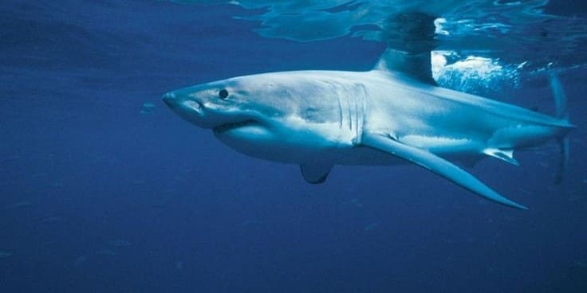
Al nacer, una cría de tiburón blanco ya mide 1,5 metros, cuando llegan a al edad adulta pueden alcanzar de 3,3 a 4,9 metros de largo.
Su dieta es variada basa en crustáceos, moluscos, aves marinas, tortugas marinas y mamíferos marinos, como leones marinos, focas, delfines e incluso algunas ballenas. Incluso consumen presas que ya han muerto, como los grandes cadáveres de ballenas muertas, gracias a sus dientes.
Se reproduce de forma ovovivípara, lo que significa que los huevos se desarrollan dentro del cuerpo de la madre. La gestación puede durar entre 12 y 22 meses, y la hembra puede tener entre 4 y 14 crías.
Es considerado uno de los tiburones más peligrosos para los humanos. Esto se debe a su tamaño, fuerza y sus hábitos de caza. Aunque los ataques a humanos son raros, la magnitud de los ataques y las lesiones que pueden causar son significativas.
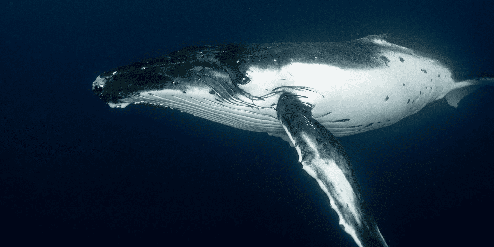
Es considerado el animal más grande del planeta. Su tamaño va de los 24,99 a 32 metros, con un peso de hasta 200 toneladas.
Siendo un animal de grandes dimensiones su dieta compuesta de plancton y krill. Una ballena azul adulta puede consumir unas 3,5 toneladas de krill al día.
El cortejo de las ballenas es tranquilo, consiste en mantener un nado conjunto, con suaves roces y toques. Como mamíferos, la fecundación de las ballenas es interna, dan a luz una cría cada 2 o 3 años,generalmente en aguas cálidas durante el invierno.
No es una especie agresiva hacia los humanos. Son animales salvajes y, aunque pueden ser grandes e intimidantes, no suelen atacar a las personas. Y en situaciones de estrés, pueden tratar de defenderse, pero no de forma agresiva.
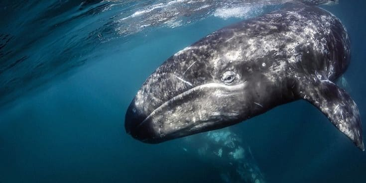
Puede llegar a medir de 11 a 15 metros con un peso aproximado de 30 toneladas.
Se alimentan principalmente de crustáceos y cardúmenes de pequeños peces que viven en los fondos marinos, removiendo el lodo con su boca para filtrar el alimento.
Se caracteriza por un ciclo reproductivo complejo que incluye una migración larga hacia las lagunas de cría en Baja California, México, y un período de gestación de 12 a 13 meses. Dando a luz a una sola cría cada dos años.
Suele ser una especie amigable, se acercan muchas veces a las embarcaciones de turistas y muestran la cola o asoman la cabeza, suelen ser pacifican y no se tiene registro de ataques a humanos.
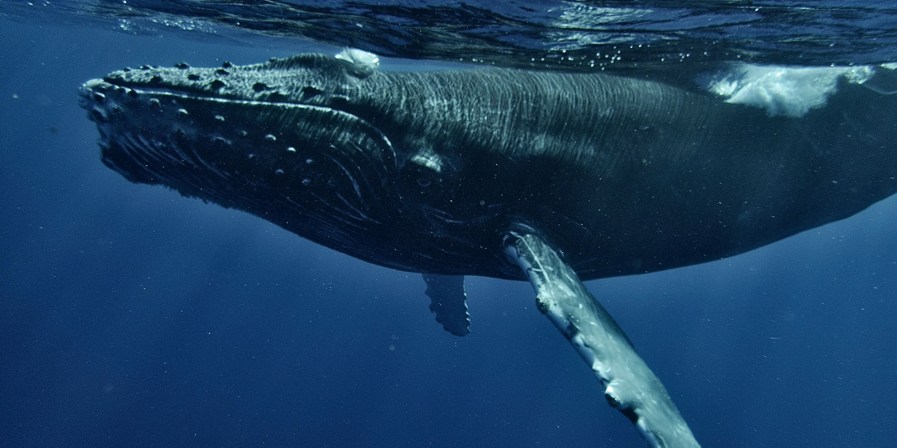
Pueden llegar a medir entre los 15 metros de largo promedio para machos y 19 metros de largo para hembras, con un peso promedio entre 30 y 40 toneladas
Es un predador oportunista que se alimenta en la superficie de los océanos. Puede alimentarse de plankton, de peces como: capelán, anchoveta, bacalao o krill
Durante la temporada de reproducción, los machos emiten cantos complejos para atraer a las hembras y compiten por el derecho a aparearse. Tienen un período de gestación que es de 11 a 12 meses, y las hembras suelen dar a luz a una sola cría de uno a tres años.
Aunque no son un peligro para los humanos, estas pueden atacar si se sienten amenazadas (especialmente si tiene crías), pueden causar daños. Con su cola puede golpear con fuerza suficiente para causar lesiones o incluso la muerte a una persona.
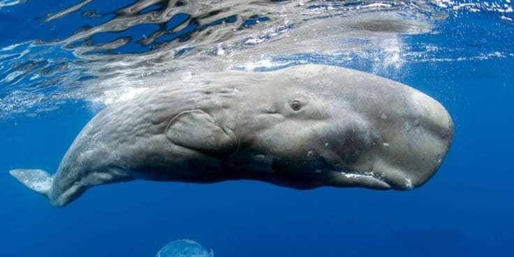
Es la ballena dentada más grande. Los machos pueden alcanzar una longitud de 16 a 18 metros con un peso de 45 toneladas, mientras que las hembras alcanzan una longitud máxima de unos 12 metros, pesando 15 toneladas.
Se alimenta principalmente de calamar gigante o kraken, pulpo y jibia que obtiene a grandes profundidades. Su dieta puede incluir tiburones, raya y bacalao.
Se aparean normalmente entre mediados de invierno y mediados de verano, en aguas tropicales y subtropicales. Las hembras da a luz cada cuatro a seis años, el período de gestación es de 12 a 18 meses cuando nace una cría o dos.
Pueden ser peligrosos en ciertas situaciones, por su tamaño y el poseer dientes pueden causar daños, aunque no son agresivos de manera natural hacia las personas ya que suelen alejarse de embarcaciones.
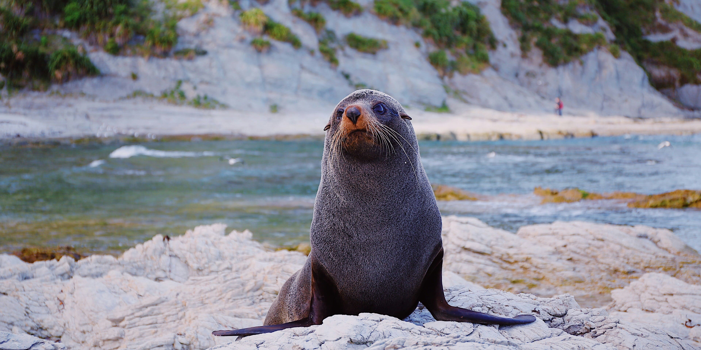
Los machos adultos miden aproximadamente 2,2 metros de longitud con un peso alrededor de 380kg y Las hembras adultas alcanzan una longitud de 1,8 metros y pesan cerca de 10kg
Son carnívoros marinos, alimentan principalmente de peces, calamares y crustáceos. También pueden consumir ocasionalmente aves marinas y pingüinos y algunos se alimentan de pulpos y krill.
Se caracteriza por un ciclo reproductivo complejo que incluye una migración larga hacia las lagunas de cría en Baja California, México, y un período de gestación de 12 a 13 meses. Dando a luz a una sola cría cada dos años
No son peligros para los humanos, pero suelen atacar si se sientena amenazados o perturbados. Pueden morder que peuden transmitir enfermedades a los humanos. Por ello es recomendable mantener la distancia con estos animales.
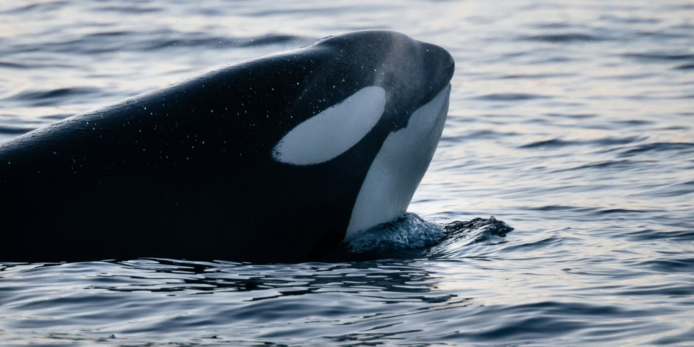
La orca macho más grande registrada medía 9,8 metros de largo y pesaba 10 000 kg. La hembra más grande registrada medía 8,5 m y pesaba 7500 kg. El moacho promedio suele medir 5,8 y 6,7 metros de largo, mientras que las hembras miden en promedio entre 4,9 y 5,8 metros de largo
Es un mamífero marino carnívoro, su dieta inclue una variedad de animales de sangre caliente y fría que incluye al menos cinco especies de pinnípedos, treinta especies de peces, tortugas, mustélidos, cefalópodos, dos especies de calamares, siete especies de aves marinas y al menos 24 especies de cetáceos (incluyendo la gran Ballena Azul).
Se reproducen de forma sexual y vivípara, la gestación dura aproximadamente 14 meses. Las hembras dan a luz una cría cada 3 a 10 años, después de un embarazo de 17 meses.
Son consideradas animales peligrosos debido a su tamaño y poder. Aunque no existen ataquen directos a humanos, si se tiene registro de incidentes con embarcaiones.
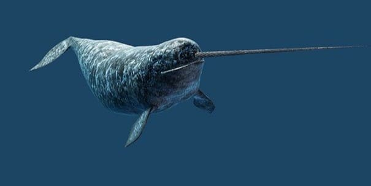
Pueden ir de 4 a 5,5 metros (sin contar el colmillo). Los colmillos de los machos pueden alcanzar de 1,5 a 3 metros de longitud. con un peso de 800kg a 1.600 kg.
Su dieta incluye peces, camarones, sepias, calamares, el bacalao y el fletán.
Las hembras dan a luz una vez cada tres años por término medio. La época de apareamiento comienza entre abril y mayo, la gestación dura unos 14 meses y sólo nace una cría.
No representan un peligro en el sentido de que ataquen a los humanos, pero su interacción con ellos puede representar un peligro para su propia supervivencia debido a las reacciones que experimentan ante la presencia humana (parálisis, ritmo cardiaco acelerado, falta de oxigeno al huir a las profundidaes).
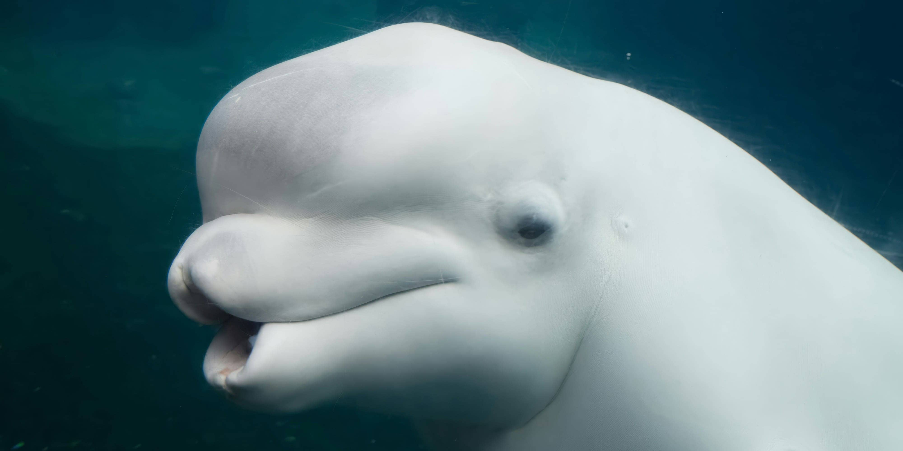
Suelen medir entre 4 y 6 metros con un peso al rededor de 1500 kg.
Suelen alimentarse de peces, crustáceos, gusanos y otros invertebrados marinos, además de cazar en aguas profundas.
Se reproducen en primavera y otoño, con un periodo de gestación de 14 meses y dan a luz una cría cada 2-4 años.
No son peligrosas para los humanos.Aunque suelen ser sociables se recomienda mantener distancia, en especial si estas tienen crías ya que pueden ser agresivas.
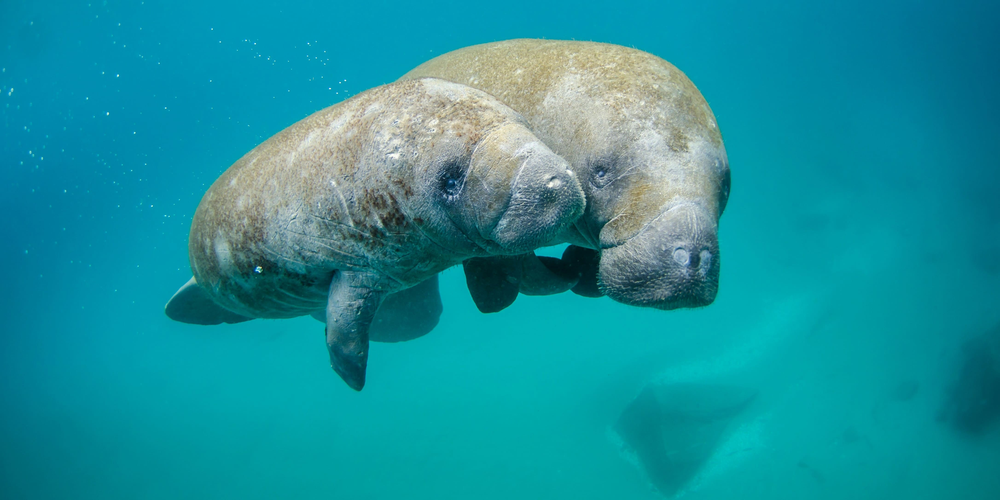
Al nacer miden entre 90 y 100 cm, y cuando llegan a la edad adulta pueden alcanzar los 3 m de longitud.
Son mamíferos herbívoros, prefieren los ecosistemas de manglares, pastos marinos, algas y vasculares acuáticas.
Son animales con baja tasa reproductiva, los periodo de gestación es de al menos 12 hasta 15 meses; la mayoría de los partos son de una cría.
Los manaties generalmente no son agresivos, estos suelen ser pacificos y curiosos. Pueden mostrarse violentos en situaciones de estrés.
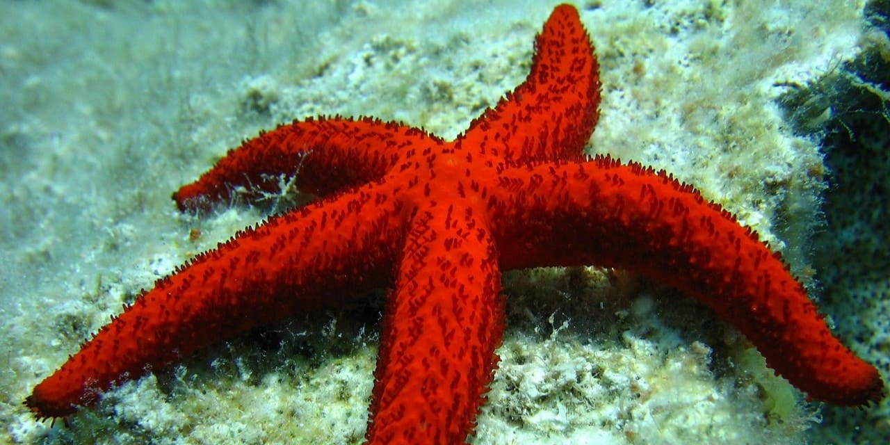
Su tamaño alcanza hasta 30 centímetros de diámetro.
Son omnívoras, comen moluscos y ofiuras, plantas y carroña. Abren los moluscos con la ayuda de sus pies ambulacrales, sacan el estómago, envuelven la presa y la disuelven con los ácidos gástricos.
El periodo de reproducción tiene lugar entre primavera y otoño. La fecundación sucede de manera externa, donde machos y hembras liberan gametos (espermatozoides y óvulos) al agua y se lleva acabo la fecundación. Otra manera es la fregmentación, ya que estas se pueden regenerar.
Pueden ser venenosas, aunque el veneno no es letal para humanos puede causar irritaciones y molestias si se tiene contacto con estas.
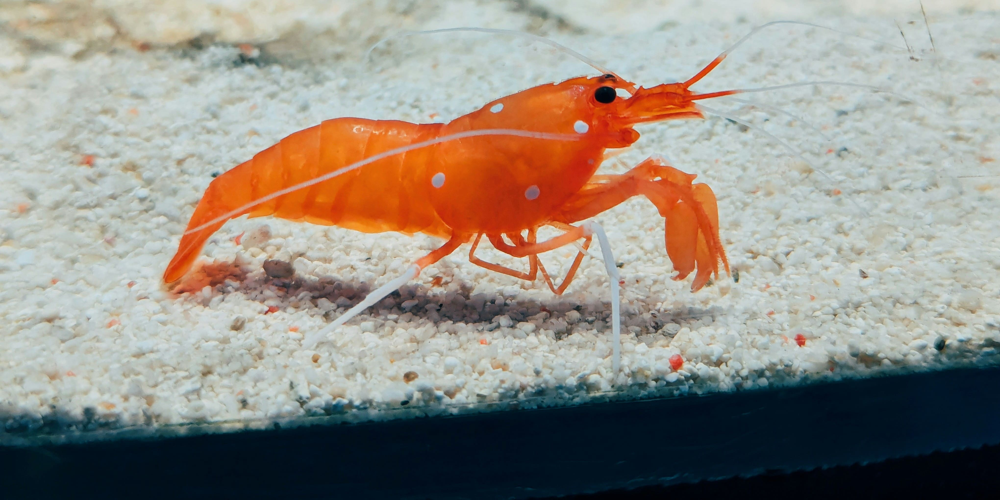
Varían en longitud desde unos pocos milímetros hasta más de 20 cm.
Su alimento consiste principalmente en pequeñas plantas y animales, aunque algunos se alimentan de carroña.
Los camarones machos y hembras se acoplan y el macho transfiere un espermatóforo, donde los huevos son fertilizados. Las hembras puede poner de 1500 a 14 000 huevos, que se adhieren a las patas nadadoras y estos eclosionan después de 12 a 14 horas.
Estos no suelen representar una amenaza directa para los humanos. A menos que se consuman existen algunos que pueden implicar riesgos de infeccion bacteriana, virus o parásitos; o se puede presentar alergía. Algunos como los camarones mantis, son conocidos por tener mordeduras muy dolorosas.
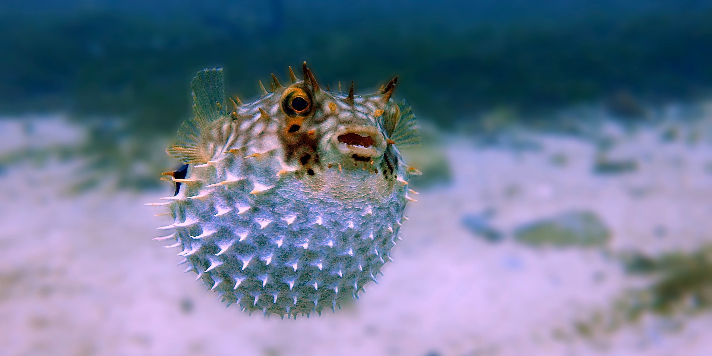
Varian de tamaño pueden ir de los 2.5 centímetros, hasta los más grandes de 60 centímetros.
Se alimentan de animales invertebrados, moluscos y algas. Algunos pueden comer caracoles, larvas de mosquito y artemia.
Son ovíparos,la hembra suele depositar los huevos en el fondo del agua, a menudo entre la vegetación o rocas. El macho fertiliza los huevos y, en algunos casos, los cuida hasta que eclosionan.
Dentro de su ambiente natural no representa un riesgo para os humanos. Solo en caso de ser consumido como alimento representa un riesgo ya que contiene una tetrodotoxina (TTX) que es mortal.
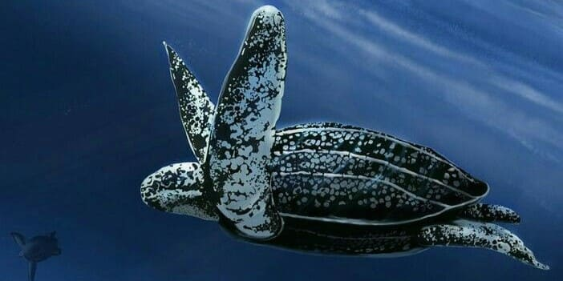
Podrían llegar a 3 metros con un peso de 800 Kg, aunque su tamaño promedio va de los 2 metros de longitud y pesar 500 kg.
Suelen alimentarsede zooplancton gelatinoso, ctenóforos, salpas y principalmente medusas
Son ovíparos, los machos tiene la cola de mayor tamaño ya que albergan el órgano copulador. Pueden llegar a depositar de 80 a 90 huevos, con un periodo de incubación variable de 50 a 78 días.
No es típicamente peligrosa para los humanos, especialmente cuando no se siente amenazada. Aunque son grandes y fuertes, no suelen atacar a menos que se sientan en peligro.
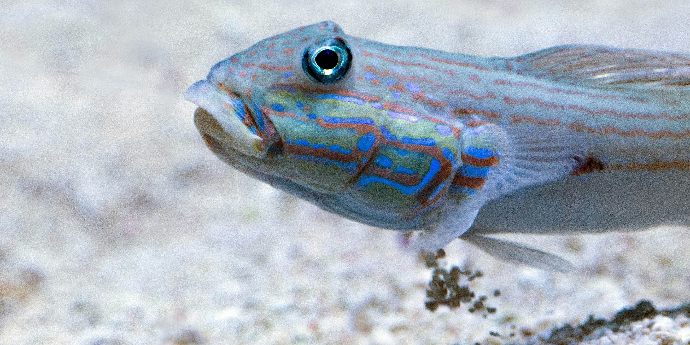
Generalmente pequeños, con tamaños que varían según la especie, pero la mayoría no supera los 15 cm.
Varia según la especie pero en general suelen comer pequeños invertebrados, larvas de insectos, crustáceos, gusanos y, en algunos casos, también de algas y plancton.
Son ovíparos y se reproducen mediante fecundación externa. La hembra pone los huevos en un sustrato como vegetación, coral o superficies rocosas, y el macho los protege y mantiene libres de detritos.
No son peces peligrosos para los humanos. La mayoría de las especies son pequeñas y pacíficas, y no suelen representar un peligro en el entorno natural.
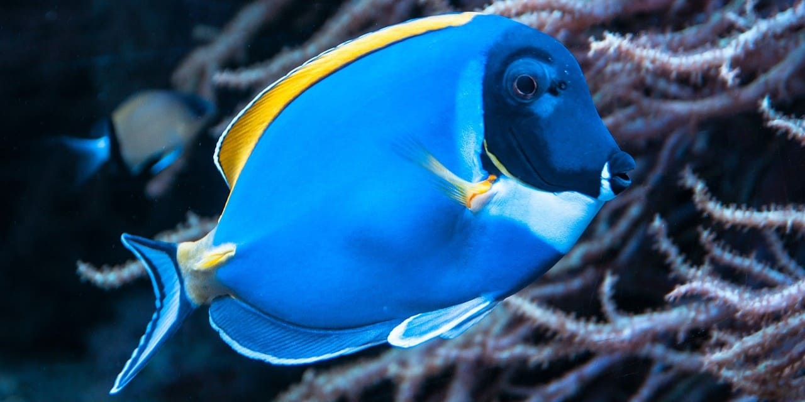
Puede llegar a medir de 25 a 30 cemtímetros y pesar medio kilo.
Son omnívoros y pero sabe que consumen criaturas acuáticas pequeñas como el pláncton, aunque la mayor parte de su alimentación se basa en algas.
Es un pez ovíparo, suelen liberar óvulos y espermatozoides en aguas abiertas, donde la fertilización ocurre externamente. Los huevos son arrastrados por las corrientes una vez que ha tenido lugar el desove, las larvas se desarrollarán en el fondo del océano antes de llegar a los arrecifes
Pueden parecer relativamente inofensivos, pero, frente al peligro, pueden mostrar un par de espinas venenosas afiladas en cada una de sus colas. Luego, los peces mueven sus cuerpos de lado a lado, amenazando con acuchillar a sus depredadores o personas con sus aguijones tóxicos.